Capítulo 7. Consistencia distribuida
El capítulo anterior contrajo una deuda y la dejó sin saldar. Se dijo que NoSQL «relaja las garantías» y «renuncia a la consistencia fuerte» para poder repartirse y seguir disponible, pero no se dijo con qué derecho ni hasta dónde. ¿Es una chapuza renunciar a la consistencia, o hay un teorema que demuestre que, repartidos los datos y pudiendo fallar la red, no queda más remedio que elegir? Lo hay, y es el teorema CAP. Este capítulo lo enuncia, deriva de él el modelo BASE y la consistencia eventual, los compara término a término con el ACID del capítulo 5, y muestra que entre la consistencia fuerte y la eventual no hay un abismo sino un dial: la coherencia ajustable por quórumes.
El capítulo es deliberadamente conceptual, pero no abstracto. Fija el coste real de distribuir, y para que ese coste no quede en palabras lo mide: una simulación de quórum, en Python puro, reproduce las tres tensiones —consistencia, disponibilidad y latencia— y las convierte en tres gráficas que se leen de un vistazo. El lector saldrá sabiendo no solo que distribuir cuesta, sino cuánto y en qué moneda, y por qué ese mismo coste reaparecerá, idéntico, cuando en la cuarta parte se repliquen los índices vectoriales. El puente al capítulo 8 será entonces taxonómico: entendido el coste de la distribución, se podrán recorrer las familias NoSQL como respuestas distintas a la misma elección.
El teorema CAP
Sitúese el escenario. Un dato no vive ya en un nodo, sino replicado en varios, para tolerar fallos y repartir la carga. Sobre ese sistema replicado se quieren tres propiedades, cuyas iniciales dan nombre al teorema (figura 7.1). La consistencia (C): toda lectura ve la escritura más reciente, como si hubiera una sola copia. La disponibilidad (A, de availability): toda petición a un nodo vivo recibe respuesta, sin errores ni esperas indefinidas. Y la tolerancia a particiones (P): el sistema sigue funcionando aunque la red se parta y los nodos no puedan comunicarse entre sí.
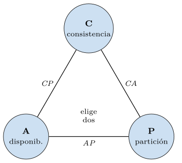
El teorema, conjeturado por Brewer (2000) y demostrado por Gilbert y Lynch (2002), afirma que un sistema no puede garantizar las tres a la vez: ha de renunciar a una. Pero el enunciado «elige dos de tres» es engañoso, porque las tres no están al mismo nivel. La partición no es una opción de diseño: en una red real, los cables se cortan, los conmutadores fallan y los centros de datos se aíslan, de modo que las particiones ocurren se quiera o no. Un sistema distribuido que pretenda ignorarlas simplemente se romperá cuando lleguen. Por eso la lectura honesta del teorema es condicional: cuando hay una partición, hay que elegir entre consistencia y disponibilidad; cuando no la hay, se pueden tener ambas.
La razón es concreta y se ve mejor con un ejemplo (figura 7.2). Dos réplicas, A y B, guardan el dato x. La red se parte y dejan de verse. Un cliente escribe x=1 en A; otro, al mismo tiempo, escribe x=2 en B. Ahora las dos réplicas discrepan, y el sistema se enfrenta a un dilema sin escapatoria. Si quiere seguir disponible, cada réplica responde con su valor local —A dirá 1, B dirá 2—, pero entonces no es consistente, porque dos lecturas simultáneas ven valores distintos. Si quiere seguir consistente, al menos una réplica ha de negarse a responder hasta que la partición sane y pueda confirmar cuál es el valor bueno, pero entonces no es disponible. No hay tercera vía: bajo partición, consistencia y disponibilidad son incompatibles.
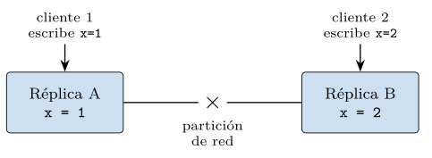
x=1, B cree x=2. El sistema ha de elegir entre responder con valores que discrepan (disponible, no consistente) o dejar de responder hasta reconciliar (consistente, no disponible).La diferencia entre un sistema CP y uno AP se ve, en el fondo, en una sola rama de código: qué hace el nodo cuando detecta que no alcanza a sus compañeros (listado 7.1). El sistema CP, si no puede confirmar en un quórum, devuelve un error antes que arriesgarse a servir un dato divergente; el AP responde con su copia local y anota que habrá que reconciliar. La misma operación, dos respuestas opuestas: esa rama es la elección del CAP.
def escribir_bajo_particion(nodo, clave, valor, w):
confirmadas = nodo.replicar_a_alcanzables(clave, valor)
if confirmadas >= w:
return "ok" # hubo quorum: ambos contentos
if politica == "CP":
return "error: sin quorum" # CP: mejor fallar que divergir
else: # politica == "AP"
nodo.guardar_local(clave, valor) # AP: responder con lo que hay
nodo.marcar_para_reconciliar(clave)
return "ok (eventual)"Listado 7.1. La eleccion del CAP en una rama: ante la imposibilidad de quorum, el sistema CP falla y el AP responde local.
Definición (Teorema CAP). En un sistema de datos distribuido sujeto a particiones de red, no es posible garantizar simultáneamente la consistencia (toda lectura ve la última escritura) y la disponibilidad (todo nodo vivo responde). Ante una partición, el diseño ha de sacrificar una de las dos.
Según qué sacrifiquen bajo partición, los sistemas se clasifican en dos grandes grupos. Los CP eligen la consistencia: ante la partición, rechazan operaciones para no servir datos divergentes; así se comportan, por defecto, los almacenes que priorizan la corrección, como HBase o las configuraciones fuertes de MongoDB. Los AP eligen la disponibilidad: siguen respondiendo en cada lado de la partición y reconcilian después; así nacieron Dynamo (DeCandia et al. 2007) y su descendiente Cassandra. Ninguno es mejor en abstracto: un banco preferirá CP para el saldo, una red social preferirá AP para los «me gusta», y la misma empresa usará ambos para datos distintos. Situar los sistemas reales en este eje ayuda a fijar las categorías:
- Cassandra, Riak (AP/EL).
-
Herederos de Dynamo: bajo partición siguen disponibles y reconcilian después; sin partición priorizan la latencia. Coherencia ajustable por quórumes.
- HBase, MongoDB en modo fuerte (CP/EC).
-
Herederos de Bigtable o configurados para consistencia: bajo partición sacrifican la disponibilidad del lado minoritario para no servir datos divergentes.
- Spanner, CockroachDB (CP/EC).
-
SQL distribuido que conserva ACID a escala global a costa de latencia de coordinación; eligen consistencia en ambos regímenes.
- DNS, cachés web (AP/EL).
-
El extremo disponible: responden siempre con lo que tienen, aunque sea viejo, y convergen con el tiempo de vida de la caché.
La lista deja claro que la clasificación no es una etiqueta de marketing sino una decisión de ingeniería con consecuencias medibles, las que la práctica de este capítulo cuantifica.
Observación. El teorema CAP se enuncia mal con frecuencia, y conviene precisarlo. Primero, la elección no es del sistema entero de una vez, sino que puede tomarse operación a operación: el mismo almacén puede servir una lectura de forma consistente y otra de forma disponible. Segundo, y más importante, CAP solo habla del caso de partición; pero incluso sin partición hay un compromiso, esta vez entre consistencia y latencia, porque garantizar que todas las réplicas coincidan antes de responder cuesta esperas. Esa extensión —que cuando hay partición se elige entre C y A, y si no, entre consistencia y latencia— se conoce como PACELC, y la práctica de este capítulo la medirá: la consistencia cuesta, haya partición o no.
Más allá del CAP: PACELC
La extensión que la observación anterior anticipa merece su propio nombre, porque corrige el malentendido más común sobre el CAP: que la consistencia solo cuesta cuando hay una avería. El marco PACELC (Abadi 2012) lo enuncia en una fórmula mnemotécnica (tabla 7.1): si hay partición (P), elegir entre disponibilidad (A) y consistencia (C); else (E), es decir, en funcionamiento normal, elegir entre latencia (L) y consistencia (C). La segunda mitad es la importante, porque describe el caso de todos los días: incluso sin avería, garantizar que todas las réplicas coincidan antes de responder obliga a esperarlas, y esa espera es latencia. Un sistema se describe, así, por dos letras: un almacén AP/EL prioriza disponibilidad y latencia (Cassandra por defecto); uno CP/EC prioriza consistencia en ambos casos (un sistema fuertemente consistente). La práctica de la sección 7.8 medirá las dos mitades: el coste en disponibilidad bajo partición y el coste en latencia sin ella.
| Régimen | La elección es entre | Coste de elegir consistencia |
|---|---|---|
| Con partición (P) | disponibilidad y consistencia | dejar de responder |
| Sin partición (E) | latencia y consistencia | esperar a las réplicas |
El modelo BASE y la consistencia eventual
Los sistemas AP, que eligen la disponibilidad, necesitan una filosofía de consistencia distinta de la ACID del capítulo 5, y se la dieron con un acrónimo deliberadamente opuesto. Frente a ACID —ácido—, BASE —base—: Basically Available (básicamente disponible), Soft state (estado blando, que puede cambiar sin entrada nueva mientras las réplicas se sincronizan) y Eventual consistency (consistencia eventual) (Pritchett 2008). Donde ACID exige que cada transacción deje la base en un estado consistente al instante, BASE acepta un estado transitoriamente incoherente a cambio de no dejar nunca de responder.
El corazón del modelo es la consistencia eventual, cuya definición es modesta y precisa: si dejan de llegar escrituras nuevas, con el tiempo todas las réplicas convergen al mismo valor (Vogels 2009). No promete que todas coincidan ahora, solo que coincidirán al final. Entre la escritura y esa convergencia hay una ventana de inconsistencia durante la cual distintas réplicas pueden devolver valores distintos (figura 7.3). La pregunta práctica no es si esa ventana existe —existe siempre—, sino cuánto dura y si la aplicación la tolera: para el contador de «me gusta», unos segundos de desfase son inocuos; para un saldo bancario, inaceptables.
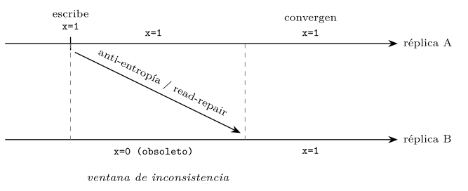
Cómo convergen las réplicas
La convergencia no es magia: la consiguen mecanismos concretos que propagan los valores entre réplicas. La anti-entropía compara periódicamente el estado de pares de réplicas y reconcilia las diferencias en segundo plano. El read-repair aprovecha cada lectura: si al leer de varias réplicas se detecta que una está rezagada, se la actualiza de paso (figura 7.4), de modo que la reconciliación viaja a cuestas del tráfico normal, sin un proceso aparte.
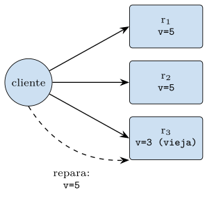
escrituras que le tocaban, y se las entrega cuando vuelve (figura 7.5), de modo que una caída breve no impide aceptar escrituras.
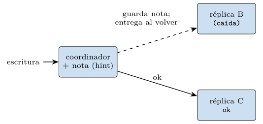
cambios de nodo en nodo como un rumor, hasta que todos se enteran. Son las tuberías por las que el valor fluye hasta que el sistema converge. El listado 7.2 esboza los dos primeros, que son los que la práctica simula.
def anti_entropia(rep_a, rep_b):
# en segundo plano: igualar dos replicas a la mas reciente
for clave in rep_a.claves() | rep_b.claves():
va, vb = rep_a.leer(clave), rep_b.leer(clave)
nueva = va if va.version >= vb.version else vb
rep_a.guardar(clave, nueva); rep_b.guardar(clave, nueva)
def read_repair(respuestas):
# al leer de R replicas: devolver la mas reciente y reparar las viejas
fresca = max(respuestas, key=lambda x: x.version)
for r in respuestas:
if r.version < fresca.version:
r.replica.guardar(fresca.clave, fresca) # repara de paso
return frescaListado 7.2. Anti-entropia y read-repair: comparar y reconciliar, en segundo plano o a cuestas de una lectura.
Observación. «Eventual» no significa «nunca» ni «cuando le apetezca»: significa que la convergencia está garantizada si cesan las escrituras, y que en la práctica ocurre en un plazo acotado —las pocas rondas de la figura 7.6—. El soft state de BASE nombra justo esa fase intermedia en la que el estado de una réplica puede cambiar sin que llegue ninguna escritura nueva, solo porque la reconciliación le trae el valor de otra. No es un estado corrupto, sino uno en tránsito hacia la convergencia; confundirlo con un fallo es el malentendido que esta observación previene.
La convergencia, medida
¿Cuánto tarda en cerrarse la ventana de inconsistencia? También se puede medir. El módulo de la práctica simula la propagación epidémica: una sola réplica recibe la escritura y, ronda a ronda, cada réplica desactualizada contacta a otra al azar y copia el valor si esta ya lo tiene (listado 7.3). La fracción de réplicas convergidas dibuja una curva en S característica (figura 7.6): arranca lenta —pocas réplicas informadas, pocos contactos útiles—, se acelera en el centro —cuando la mitad ya sabe, casi todo contacto informa— y se satura al final, cuando apenas quedan rezagadas. Con cincuenta réplicas, el sistema pasa del 2 % al 97 % en nueve rondas: la convergencia es rápida y, sobre todo, automática. Esa curva es la ventana de inconsistencia, y su anchura —unas pocas rondas— es lo que la aplicación ha de estar dispuesta a tolerar.
for i in range(replicas):
if not informado[i]:
otro = rng.randrange(replicas)
if informado[otro]: # contacto util: copia el valor
nuevos.append(i)
# tras unas rondas, 'informado' es cierto para casi todasListado 7.3. El nucleo de la simulacion de gossip: cada replica desactualizada copia el valor si quien contacta ya lo tiene.
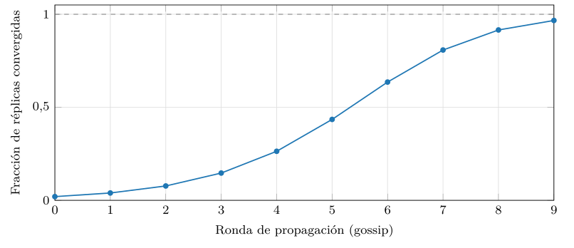
src/cap07_cap_quorum.py.Reconciliar valores en conflicto
Queda el problema más espinoso, el de la figura 7.2: cuando dos réplicas divergen y luego se reencuentran, ¿qué valor gana? Hay varias estrategias, y la elección tiene consecuencias.
La más simple es el último que escribe gana (last-write-wins, LWW): se sella cada escritura con una marca de tiempo y, ante un conflicto, se conserva la de marca mayor (listado 7.4). Es trivial de implementar, pero pierde datos en silencio: la escritura descartada desaparece sin rastro, y si los relojes de los nodos no están perfectamente sincronizados, puede ganar la escritura equivocada.
def resolver_lww(a, b):
# a, b: (valor, marca_de_tiempo)
return a if a[1] >= b[1] else bListado 7.4. Resolución de conflictos por último-en-escribir-gana: simple, pero descarta una escritura.
Una alternativa que no pierde información usa relojes vectoriales, basados en la relación «sucede antes» de Lamport (1978). Cada réplica lleva un contador por nodo; al escribir, incrementa el suyo (listado 7.5). Comparando dos relojes se sabe si una escritura sucedió antes que otra —y entonces la posterior gana— o si son concurrentes —ninguna vio a la otra—, en cuyo caso el sistema no decide a ciegas, sino que conserva ambas versiones y delega la reconciliación en la aplicación, que conoce la semántica (sumar dos carritos de la compra, por ejemplo, en lugar de descartar uno).
def fusionar(a, b):
# combina dos relojes tomando el maximo por nodo
nodos = set(a) | set(b)
return {n: max(a.get(n, 0), b.get(n, 0)) for n in nodos}
def relacion(a, b):
# 'a<b' si a precede a b; 'concurrente' si ninguno precede
ae = all(a.get(n, 0) <= b.get(n, 0) for n in set(a) | set(b))
be = all(b.get(n, 0) <= a.get(n, 0) for n in set(a) | set(b))
if ae and not be:
return "a precede a b"
if be and not ae:
return "b precede a a"
return "concurrente: conservar ambas"Listado 7.5. Relojes vectoriales: detectan si dos escrituras son causales o concurrentes, sin perder ninguna.
Una traza concreta hace ver la diferencia (listado 7.6). Dos réplicas parten del mismo estado; durante una partición, cada una recibe una escritura e incrementa su contador. Al reencontrarse, sus relojes son {A:1} y {B:1}: ninguno domina al otro, así que el sistema los declara concurrentes y conserva ambos valores en lugar de elegir uno a ciegas, como habría hecho el LWW.
estado inicial A: {} B: {}
A escribe x=1 A: {A:1} (incrementa su contador)
B escribe x=2 B: {B:1} (en el otro lado de la particion)
reencuentro comparar {A:1} y {B:1}
-> {A:1} no precede a {B:1} ni al reves
-> CONCURRENTE: conservar x=1 y x=2 para que la app decidaListado 7.6. Traza de dos relojes vectoriales en una particion: el resultado es ‘concurrente’, y no se pierde ninguna escritura.
El mismo mecanismo escala a más nodos. El listado 7.7 sigue tres réplicas a lo largo de una secuencia con causalidad y concurrencia: B responde a A (causal, su reloj domina al de A), mientras C escribe por su cuenta durante una partición (concurrente con ambos). Al reconciliar, el sistema sabe que el valor de B sustituye al de A pero que el de C es independiente, así que conserva dos versiones, no una ni tres.
A escribe A:{A:1}
B lee A, escribe B:{A:1, B:1} (vio a A: B sucede a A)
C escribe (part.) C:{C:1} (aislada: no vio ni a A ni a B)
reconciliar B:{A:1,B:1} y C:{C:1}
-> {A:1,B:1} no precede a {C:1} ni al reves -> CONCURRENTE
-> resultado: conservar el valor de B y el de C (dos versiones)Listado 7.7. Tres relojes vectoriales: B sucede a A (causal), C es concurrente. La reconciliacion conserva las versiones no comparables.
La tercera vía, más reciente, son los tipos de datos replicados sin conflicto (CRDT) (Shapiro et al. 2011): estructuras diseñadas para que la fusión de dos réplicas sea siempre determinista y sin pérdida, sea cual sea el orden en que llegaron los cambios. El ejemplo mínimo es un contador que cada nodo incrementa por separado y que se fusiona tomando el máximo por nodo y sumando (listado 7.8): dos incrementos concurrentes no se pisan, se suman.
La tabla 7.2 resume las tres estrategias. No hay una mejor en abstracto: se elige según cuánto duele perder una escritura y cuánta complejidad se está dispuesto a asumir.
| Estrategia | ¿Pierde datos? | Complejidad | Cuándo |
|---|---|---|---|
| Último gana (LWW) | sí, en silencio | mínima | el desfase es inocuo |
| Relojes vectoriales | no (conserva ambos) | media | la app sabe fusionar |
| CRDT | no (fusión sin pérdida) | alta, restringe ops | el tipo encaja |
def fusionar_contador(a, b):
# cada nodo cuenta sus propios incrementos; el total es la suma
nodos = set(a) | set(b)
return {n: max(a.get(n, 0), b.get(n, 0)) for n in nodos}
def valor(c):
return sum(c.values())Listado 7.8. Un contador CRDT: la fusion por maximo-por-nodo es asociativa y conmutativa, asi que converge sin conflicto.
Grados de consistencia eventual
«Eventual» es el grado más débil, y entre él y la consistencia fuerte hay variantes intermedias que las aplicaciones a menudo necesitan. Lee tus propias escrituras (read-your-writes): un usuario ve siempre lo que él acaba de escribir, aunque otros tarden en verlo. Lecturas monótonas (monotonic reads): si un usuario vio un valor, no verá luego uno más antiguo, de modo que el tiempo no «retrocede» para él. Consistencia causal: si una escritura depende de otra —una respuesta a un mensaje—, todos las ven en ese orden (figura 7.7). Estas garantías son más fuertes que la eventual pura y más baratas que la fuerte, y forman un continuo que la sección 7.7 convierte en un dial.
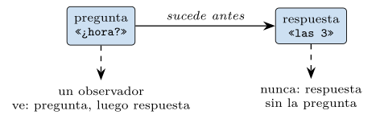
ACID frente a BASE
Conviene ahora poner las dos filosofías una al lado de la otra, porque se contraponen término a término (tabla 7.3). No es una jerarquía —BASE no es «ACID defectuoso», ni ACID es «BASE anticuado»—, sino dos puntos de diseño para dos conjuntos de restricciones, exactamente como el capítulo 6 presentó relacional y NoSQL.
| Eje | ACID | BASE |
|---|---|---|
| Prioridad | consistencia inmediata | disponibilidad continua |
| Estado | siempre coherente | blando, converge con el tiempo |
| Consistencia | fuerte, al instante | eventual, con ventana |
| Bajo partición | deja de escribir (CP) | sigue disponible (AP) |
| Encaja en | un nodo o pocos, ACID | muchos nodos, escala web |
| Coste | latencia y bloqueo | reconciliación y desfase |
La elección entre las dos no es ideológica sino del dato. Para el saldo de una cuenta, una ventana de inconsistencia es inaceptable y se paga con gusto la latencia de ACID; para el número de visitas de un vídeo, la latencia de ACID es un lujo absurdo y un desfase de segundos no molesta a nadie. La madurez consiste en no aplicar una filosofía a todo, sino en clasificar cada dato por cuánta incoherencia tolera —ninguna, alguna, mucha— y elegir en consecuencia. Y, como muestra la sección siguiente, esa elección no tiene por qué ser binaria.
Un ejercicio de clasificación sobre una misma aplicación —una tienda en línea— hace tangible el método. Tres datos, tres elecciones distintas:
El pago de un pedido no tolera ninguna incoherencia: cobrar dos veces o perder un cobro es inaceptable. Va con ACID, consistencia fuerte, aunque cueste latencia y deje de aceptarse bajo partición.
El stock mostrado en la ficha tolera algo de desfase: enseñar «quedan 3» cuando ya quedan 2 es un error menor que se corrige al confirmar. Va con consistencia intermedia —lee tus propias escrituras— que da agilidad sin sustos groseros.
El contador de visitas del producto tolera mucho desfase: que dos usuarios vean números distintos no importa. Va con BASE, consistencia eventual, máxima disponibilidad y coste mínimo.
La misma aplicación, pues, usa las dos filosofías y los grados intermedios, escogidos dato a dato según cuánto duele equivocarse. Esa es la decisión que la coherencia ajustable de la sección siguiente convierte en un parámetro.
Coherencia ajustable
La gran aportación práctica de los sistemas tipo Dynamo es haber convertido la elección del CAP en un dial que se gradúa por operación, mediante tres números. Sea \(N\) el número de réplicas de cada dato, \(W\) el número de réplicas que una escritura debe confirmar antes de darse por buena, y \(R\) el número que una lectura debe consultar. Jugando con \(R\) y \(W\) se recorre todo el espectro entre disponibilidad y consistencia.
La clave es una desigualdad sencilla con una consecuencia profunda: si \[R + W > N,\] entonces el conjunto de réplicas que confirma una escritura y el que atiende una lectura se solapan necesariamente en al menos una réplica (figura 7.8), y esa réplica compartida tiene el último valor, de modo que la lectura no puede ser obsoleta: la consistencia es fuerte. Si \(R + W \le N\), los dos conjuntos pueden no tocarse, y entonces una lectura puede perderse la última escritura: la consistencia es eventual. El umbral \(R+W>N\) es la frontera exacta entre los dos mundos, y la práctica lo medirá.
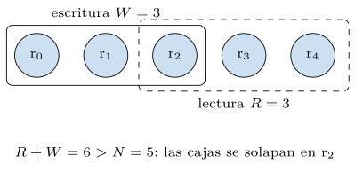
Esto da un espectro continuo, no una elección de dos extremos (figura 7.9). En un extremo, \(W=N\) y \(R=1\) (escribir en todos, leer de uno): lecturas rapidísimas y siempre frescas, pero escrituras frágiles, que fallan si una sola réplica está caída. En el otro, \(W=1\) y \(R=N\): escrituras siempre posibles, lecturas caras. En medio, el quórum de mayoría —\(W=R=\lceil(N{+}1)/2\rceil\)— cumple \(R+W>N\) con el menor coste, y es el ajuste por defecto de muchos sistemas. Estos niveles se nombran a menudo ONE, QUORUM y ALL, y se eligen por operación (listado 7.9): la misma tabla puede escribirse con QUORUM para los datos críticos y leerse con ONE para los que toleran desfase.
ONE, QUORUM y ALL permiten elegir por operación.-- escritura critica: confirmar en una mayoria de replicas
CONSISTENCY QUORUM;
INSERT INTO cuenta (id, saldo) VALUES (1, 100);
-- lectura que tolera desfase: basta una replica, la mas rapida
CONSISTENCY ONE;
SELECT saldo FROM cuenta WHERE id = 1;Listado 7.9. Coherencia ajustable por operacion, al estilo de Cassandra: cada consulta elige su nivel.
Una traza con números fija la idea (listado 7.10). Con \(N=3\), \(W=2\) y \(R=2\) (quórum de mayoría, \(R+W=4>3\)), una escritura confirma en dos réplicas con la versión nueva; una lectura posterior consulta dos réplicas cualesquiera y, como los conjuntos han de solaparse, al menos una lleva la versión nueva: la lectura se queda con la versión más alta de las que ve, que es la correcta, aunque una de las réplicas consultadas estuviera rezagada.
estado r0:v1 r1:v1 r2:v1
escribir v2 (W=2) -> r0:v2 r1:v2 r2:v1 (r2 quedo rezagada)
leer (R=2) de {r1, r2}: ve v2 (de r1) y v1 (de r2)
-> devuelve max version = v2 (correcto)
-> read-repair: actualiza r2 a v2 de pasoListado 7.10. Traza de un quorum con N=3, W=2, R=2: la lectura ve la version nueva porque los conjuntos de escritura y lectura se solapan.
En un sistema real como Cassandra, esto se declara en dos planos (listado 7.11): el factor de replicación \(N\) se fija al crear el espacio de claves, y el nivel —\(R\) o \(W\)— se elige por sentencia. La misma tabla admite así una escritura fuerte y una lectura barata sin cambiar el esquema.
-- N = 3 replicas por dato, fijado al crear el espacio de claves
CREATE KEYSPACE tienda WITH replication = {
'class': 'SimpleStrategy', 'replication_factor': 3 };
-- escritura fuerte: confirmar en una mayoria (W=2, con R=2 da R+W>N)
CONSISTENCY QUORUM;
INSERT INTO tienda.cuenta (id, saldo) VALUES (1, 100);
-- lectura barata que tolera desfase: una sola replica
CONSISTENCY ONE;
SELECT saldo FROM tienda.cuenta WHERE id = 1;Listado 7.11. En CQL: el factor de replicacion N en el espacio de claves, y el nivel R/W por sentencia.
El mecanismo de lectura y escritura por quórum se resume en unas pocas líneas (listado 7.12): escribir es enviar el valor a las réplicas y esperar \(W\) confirmaciones; leer es pedir a las réplicas y, de las \(R\) respuestas, quedarse con la de versión más alta —y, de paso, reparar las rezagadas.
def escribir(replicas, clave, valor, version, w):
confirmadas = 0
for r in replicas:
if r.guardar(clave, valor, version): # envia y confirma
confirmadas += 1
if confirmadas >= w: # quorum de escritura
return True
return False # no se alcanzo el quorum: escritura no garantizada
def leer(replicas, clave, r):
respuestas = [rep.leer(clave) for rep in replicas[:r]]
return max(respuestas, key=lambda x: x.version) # la mas recienteListado 7.12. Lectura y escritura por quorum: esperar W confirmaciones al escribir, quedarse con la version mas alta al leer.
Práctica: el quórum, medido
Todo lo anterior es comprobable sin un clúster, porque las tres tensiones del quórum son estadísticas y se pueden simular. El módulo src/cap07_cap_quorum.py —Python puro, sin servicio ni GPU, que se ejecuta en el propio intérprete con una semilla fija— modela \(N\) réplicas en memoria y mide tres cosas: cuándo aparecen lecturas obsoletas, cómo cae la disponibilidad al fallar los nodos, y cuánto cuesta en latencia un quórum grande. Cada medida es una de las tres gráficas que siguen.
Las tres leyes del quórum, medidas
La predicción, declarada antes de medir, es la desigualdad de la sección 7.7: las lecturas obsoletas deben desaparecer en cuanto \(R+W>N\). El módulo prueba todas las parejas \((R,W)\), cuenta qué fracción de lecturas se pierde la última escritura y promedia por la suma \(R+W\) (listado 7.13). La medida confirma la teoría con nitidez (figura 7.10): con \(N=5\), la fracción de lecturas obsoletas baja del 80 % al 15 % según crece la suma, y cae a cero exactamente en \(R+W=6\), es decir, en \(R+W>N\). El umbral no es una aproximación: es un acantilado.
escritas = set(rng.sample(replicas, w))
leidas = rng.sample(replicas, r)
fresca = any(x in escritas for x in leidas) # se solapan?
# si R+W>N, los conjuntos se tocan siempre y 'fresca' es ciertoListado 7.13. El nucleo de la simulacion: una lectura es fresca si su conjunto de replicas toca el de la escritura.
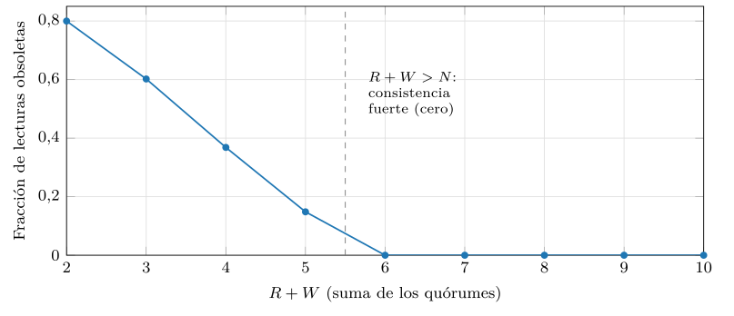
src/cap07_cap_quorum.py.Si la consistencia fuerte exige quórumes grandes, su precio aparece al fallar los nodos. El módulo hace caer cada réplica de forma independiente con probabilidad \(p\) y mide la probabilidad de poder formar el quórum de escritura para tres niveles (figura 7.11). El resultado es el teorema CAP hecho curva: exigir ONE mantiene la escritura disponible casi siempre, pero no garantiza consistencia; exigir ALL se desploma en cuanto un nodo falla; y QUORUM, que es el ajuste que da consistencia fuerte, paga esa garantía con una disponibilidad que cae a la mitad cuando la mitad de los nodos falla. No hay ajuste que sea a la vez máximamente consistente y máximamente disponible: la curva es la frontera, y cada sistema elige un punto sobre ella.
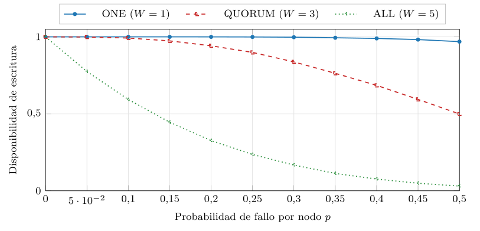
src/cap07_cap_quorum.py.Y aún sin partición ni fallo hay un coste, el que anuncia PACELC. Contactar un quórum de tamaño \(Q\) significa esperar a las \(Q\) réplicas más rápidas de las \(N\), así que cuanto mayor es el quórum, más arriba en la cola de latencias hay que esperar. El módulo modela la latencia de cada réplica con una distribución sesgada y mide la del quórum (figura 7.12): la mediana casi se cuadruplica al pasar de leer una réplica a leerlas todas, y la cola (p95) crece aún más deprisa. La consistencia, pues, cuesta latencia incluso cuando todo va bien: ese es el «ELC» de PACELC que la observación de la sección 7.1 anticipaba.
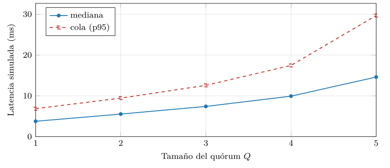
src/cap07_cap_quorum.py.Queda una pregunta de diseño que la simulación también responde: si más réplicas dan más disponibilidad, ¿por qué los sistemas reales replican en números modestos —tres, cinco, siete— y no en docenas? El módulo mide la disponibilidad del quórum de mayoría al crecer \(N\), con la probabilidad de fallo por nodo fija (figura 7.13). La curva sube hacia uno, pero con rendimientos decrecientes: pasar de tres a cinco réplicas gana mucho; pasar de nueve a once, casi nada. Como cada réplica añadida cuesta almacenamiento, escrituras y coordinación, hay un punto en que añadir más deja de compensar. La regla práctica —tolerar \(f\) fallos exige \(N\ge 2f+1\), y se replica en impares para que la mayoría esté siempre definida— sale directamente de esta curva.
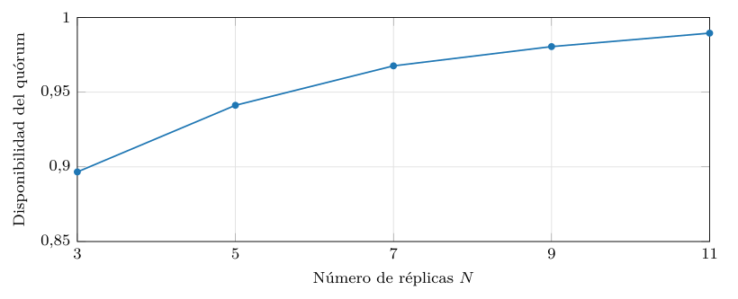
src/cap07_cap_quorum.py.Cómo se ejecuta el experimento
Las cinco mediciones salen de un mismo programa, y conviene ver cómo se orquesta (listado 7.14). El módulo anuncia primero los recursos —Python puro, CPU, sin servicio ni GPU— según la convención del libro, fija la semilla para que los números se reproduzcan, y luego encadena las cinco simulaciones, cada una de las cuales vuelca su tabla a un .dat que las figuras leen. No hay nada oculto: el mismo N=5 y la misma semilla gobiernan todo, de modo que quien ejecute el módulo obtendrá exactamente las cifras de las figuras de este capítulo.
def main():
anunciar() # recursos: python puro, cpu, sin gpu
simular_consistencia() # -> cap07_quorum.dat
simular_disponibilidad() # -> cap07_disponibilidad.dat
simular_latencia() # -> cap07_latencia.dat
simular_convergencia() # -> cap07_convergencia_t.dat
simular_escala_n() # -> cap07_escala_n.dat
demostracion(15) # 15 lecturas eventualesListado 7.14. El motor del experimento: anunciar recursos, fijar la semilla y encadenar las cinco simulaciones.
Fiel a la convención, el módulo muestra quince lecturas bajo el nivel más débil (\(R=W=1\)), donde no hay solapamiento garantizado (listado 7.15). La muestra hace tangible la consistencia eventual: unas lecturas dan con la réplica recién escrita y ven el valor fresco; la mayoría caen en otra réplica y ven uno obsoleto. No es un fallo, es el modo de funcionar elegido: disponibilidad a cambio de desfase.
n escrita_en leida_en desenlace
-- ---------- -------- ---------
0 rep-1 rep-2 OBSOLETA
1 rep-3 rep-1 OBSOLETA
7 rep-3 rep-3 fresca
8 rep-3 rep-3 fresca
... ... ... ...
-> 3/15 frescas; el resto vio un valor anteriorListado 7.15. Quince lecturas con R=W=1: sin solapamiento garantizado, unas ven el ultimo valor y otras uno anterior.
Lo que la práctica no decide
Conviene cerrar con la honestidad de costumbre. La simulación es un modelo: réplicas en memoria, fallos independientes, latencias de una distribución elegida. La realidad añade correlaciones —los nodos de un mismo bastidor caen juntos—, relojes desincronizados y cargas que cambian, y trasladar las cifras exactas a un sistema real sería un error. Lo que la simulación captura, y captura bien, es la forma de las tres leyes: el acantilado en \(R+W>N\), el desplome de la disponibilidad con el quórum, y el ascenso de la latencia con él. Y lo que no decide —nunca— es qué punto elegir: eso depende de cuánta incoherencia tolera cada dato, que es una cuestión del negocio, no de la estadística. La herramienta cuantifica el compromiso; el juicio sobre cuánta consistencia hace falta lo pone el diseñador.
Vistas juntas, las cinco mediciones componen un único cuadro, el del coste de distribuir. La frontera de la consistencia (figura 7.10) dice cuándo se consigue —en \(R+W>N\)—; la disponibilidad (figura 7.11) y la latencia (figura 7.12) dicen cuánto cuesta conseguirla, bajo fallo y sin él; la convergencia (figura 7.6) dice cuánto dura la incoherencia mientras tanto; y la escala con \(N\) (figura 7.13) dice cuántas réplicas compensa poner. No son cinco hechos sueltos, sino las cinco coordenadas de una misma decisión: dónde situarse entre la consistencia y la disponibilidad, sabiendo lo que cada paso cuesta. Ese cuadro es el que un diseñador lleva en la cabeza al configurar un almacén distribuido, y el que reaparecerá —con vectores en lugar de saldos— al replicar un índice de similitud en la cuarta parte.
Síntesis y puente al capítulo siguiente
Este capítulo ha saldado la deuda del anterior. La renuncia a la consistencia que NoSQL hacía «por escala» no es una chapuza, sino la consecuencia de un teorema: bajo partición —y la partición es inevitable— hay que elegir entre consistencia y disponibilidad. De esa elección nace el modelo BASE, que cambia la coherencia inmediata de ACID por una consistencia eventual con ventana, sostenida por mecanismos de convergencia y por estrategias de reconciliación que van del frágil «último que gana» a los relojes vectoriales y los CRDT. Y la elección no es binaria: la coherencia ajustable por quórumes, gobernada por la desigualdad \(R+W>N\), convierte el dilema del CAP en un dial que se gradúa por operación.
Sobre todo, el capítulo ha puesto número al coste de distribuir. Las tres gráficas medidas no son adornos: son las tres caras de un mismo precio. La consistencia fuerte exige quórumes que se solapan (\(R+W>N\)), y esos quórumes cuestan disponibilidad cuando los nodos fallan y latencia cuando no. Ese precio —consistencia contra disponibilidad y latencia— es el que toda base distribuida paga, y el que reaparecerá, idéntico, cuando en la cuarta parte se repliquen los índices vectoriales para servir búsquedas a escala.
El hilo del libro avanza un paso más. El «igual a» exacto del modelo relacional, que el capítulo 5 defendía con ACID, se ha relajado aquí en un «igual a, eventualmente»: las réplicas acabarán coincidiendo, pero quizá no ahora. Con el coste de la distribución ya entendido y medido, el capítulo 8 puede recorrer el catálogo de los sistemas que lo pagan —las familias NoSQL—, cada una situada en un punto distinto de las fronteras que aquí se han trazado.
Ejercicios propuestos
Lecturas recomendadas
Gilbert y Lynch (2002): la demostración formal de la conjetura de Brewer; el teorema CAP con todo su rigor.
Brewer (2012): la revisión del propio Brewer doce años después, que matiza el «elige dos» y aclara que la elección es por operación y solo bajo partición.
Vogels (2009): la exposición de la consistencia eventual por el director técnico de Amazon, con los grados intermedios y los mecanismos de convergencia.
Pritchett (2008): la presentación del modelo BASE como alternativa razonada a ACID, con ejemplos de diseño.
DeCandia et al. (2007): el sistema que popularizó la coherencia ajustable por quórumes \(N\), \(R\), \(W\) y los relojes vectoriales.
Kleppmann (2017): el tratamiento moderno y unificado de la replicación, la consistencia y los conflictos, que enmarca todo el capítulo.